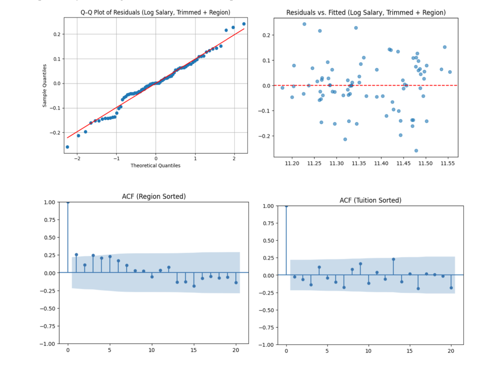
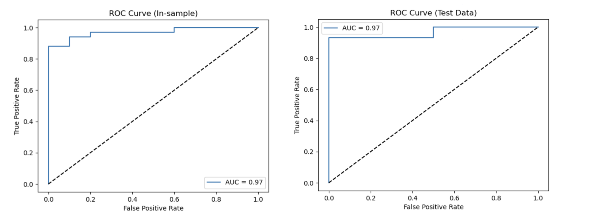

The Impact of Undergraduate Education on Future Earnings
This project aims to examine how factors like university choice, tuition, region, undergraduate population, selectivity, and socioeconomic diversity influence a person’s future mid-career median salary, and whether it is possible to predict financial outcomes based on undergraduate university characteristics.
This project analyzes salary data from the 2017 Wall Street Journal/PayScale College Salary Report combined with university data from the National Center for Education Statistics (IPEDS). By merging and processing these datasets, it explores how factors such as tuition, enrollment, financial aid, and other university characteristics relate to long-term earning potential. The analysis provides insights into the financial impact of educational choices, while noting potential challenges including limited sample size, data complexity, and the focus on U.S. institutions, which may affect the generalizability of the findings.
Before interpreting the results of the linear regression model, the project verified that the four key assumptions of ordinary least squares (OLS) regression were met: linearity between predictors and the response variable, normally distributed residuals, constant variance of residuals (homoscedasticity), and absence of multicollinearity among predictors. This was supported through data transformations, visual diagnostics, and structural checks to ensure the model’s validity.

With these assumptions satisfied, the analysis proceeded to conducting the ordinary least squares (OLS) regression using the combined dataset from IPEDS and the Wall Street Journal College Salary Report to predict the log-transformed mid-career salary. The goal was to identify how university related factors such as selectivity, tuition, region, and financial diversity impact future salaries. The dependent variable was the log of mid-career salary, with explanatory variables including tuition, selectivity, enrollment, and financial aid distribution.
Additionally, a logistic regression model was developed to predict a binary variable, Is_wealthy, which indicates whether an individual’s mid-career median salary is above $72,000. This model primarily used variables from the merged IPEDS/NCES dataset, as incorporating data from the Wall Street Journal dataset introduced excessive multicollinearity, preventing a proper regression analysis.
This project evaluated model accuracy in predicting future wealth using two ROC curves. The in-sample curve shows performance on the training data, while the second uses a 60/40 train-test split. Both curves have an AUC of 0.97, indicating strong predictive ability. However, the high in-sample score suggests overfitting, and the limited test data size affects the reliability of results. Future analysis with larger datasets and cross-validation is recommended to improve model robustness. Despite limitations, the model performs well given the available data.
Tools & Methods
- Python (pandas, numpy, statsmodels, matplotlib)
- Exploratory Data Analysis
- Data Cleaning
- Regression Analysis
Additional Contributors
- Anushna Bardhan